library(deSolve)
library(purrr)
library(adaptivetau)Warning: package 'adaptivetau' was built under R version 4.3.2library(deSolve)
library(purrr)
library(adaptivetau)Warning: package 'adaptivetau' was built under R version 4.3.2plot2 <- function(...) plot(..., lwd = 2, col = 4)lines2 <- function(...) lines(..., lwd = 2)replicate2 <- function(...) replicate(..., simplify = FALSE)\[ \frac{dN}{dt} = -r_cN \]
continuous_deterministic <- function(N0, rc, times) {
tibble::as_tibble(
as.data.frame(
ode(c(N = N0),
times,
function(time, variables, parameters) {
with(as.list(c(variables, parameters)), {
dN <- rc * N
list(dN)
})
},
c(rc = rc))
)
)
}continuous_deterministic(1000, -.2, seq(0, 10, .1)) |>
with(plot2(time, N, type = "l"))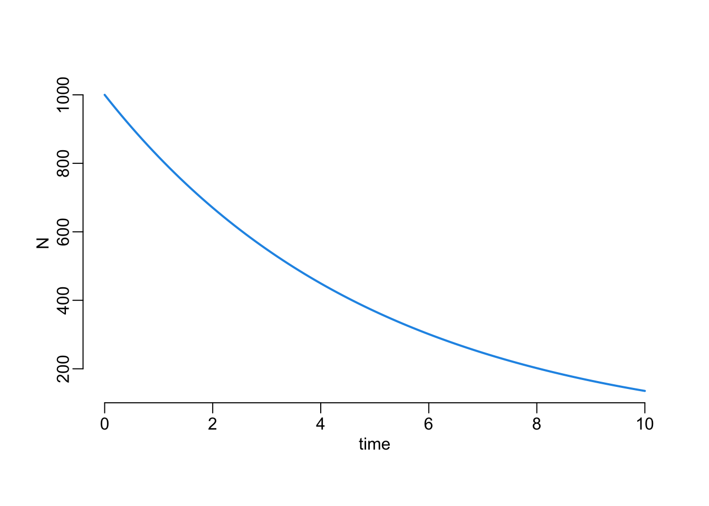
\[ N_{t+1} = r_d N_t \]
with
\[ r_d = e^{r_c \Delta t} \]
\(\Delta t\) being the duration of the time step.
discrete_deterministic <- function(N0, rc, times) {
rd <- exp(rc * mean(diff(times)))
N <- N0
for (i in times[-1]) {
N <- c(N, tail(N, 1) * rd)
}
tibble::tibble(time = times, N = N)
}compare_continuous_discrete_deterministic <- function(
step, N0 = 1000, rc = -.2, tmin = 0, tmax = 10) {
continuous_deterministic(N0, rc, seq(tmin, tmax, step)) |>
with(plot2(time, N, type = "l"))
discrete_deterministic(N0, rc, seq(tmin, tmax, step)) |>
with(points(time, N, lwd = 2, col = 2))
}compare_continuous_discrete_deterministic(.1)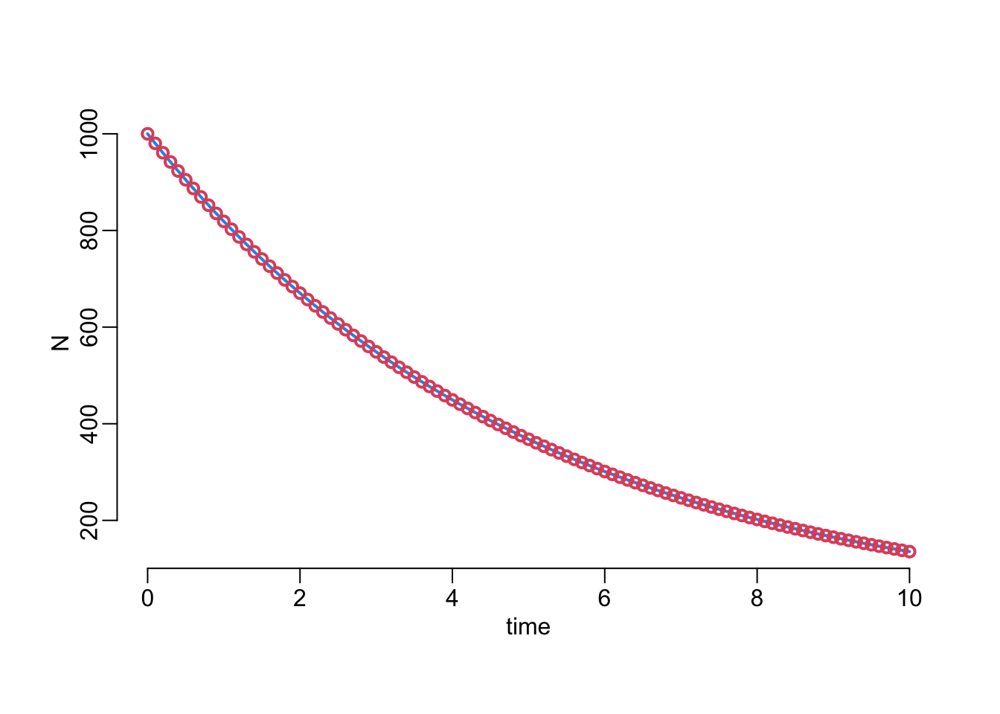
compare_continuous_discrete_deterministic(1)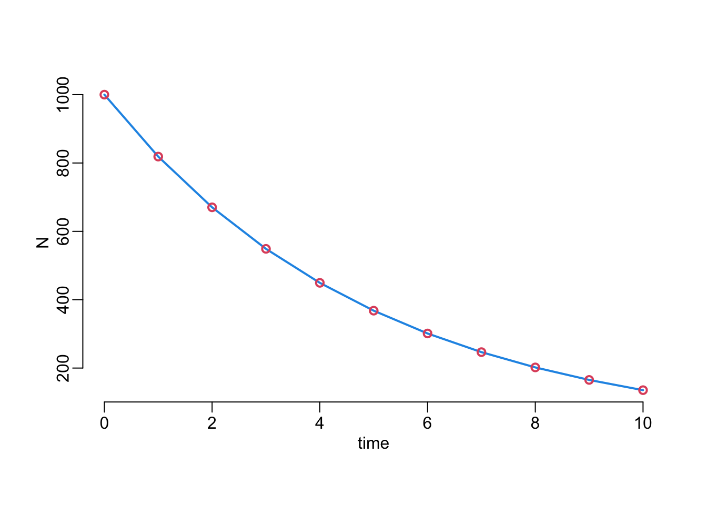
\[ p = 1 - e^{r_c\Delta t} \]
discrete_probabilistic <- function(N0, rc, times) {
Delta_t <- mean(diff(times))
p <- 1 - exp(rc * Delta_t)
N <- N0
for (i in times[-1]) {
N <- c(N, tail(N, 1) * (1 - p))
}
tibble::tibble(time = times, N = N)
}compare_discrete_deterministic_probabilistic <- function(
step, N0 = 1000, rc = -.2, tmin = 0, tmax = 10) {
det <- discrete_deterministic(N0, rc, seq(tmin, tmax, step))
prb <- discrete_probabilistic(N0, rc, seq(tmin, tmax, step))
plot(det$N, prb$N, col = 4, lwd = 2)
abline(0, 1)
}compare_discrete_deterministic_probabilistic(.1)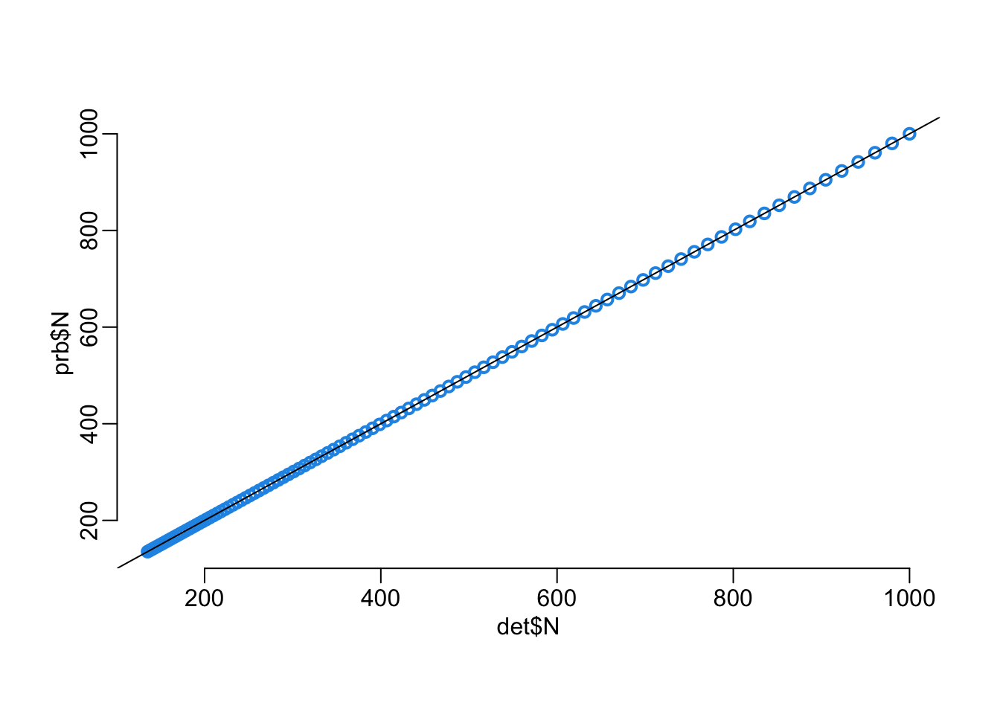
compare_discrete_deterministic_probabilistic(1)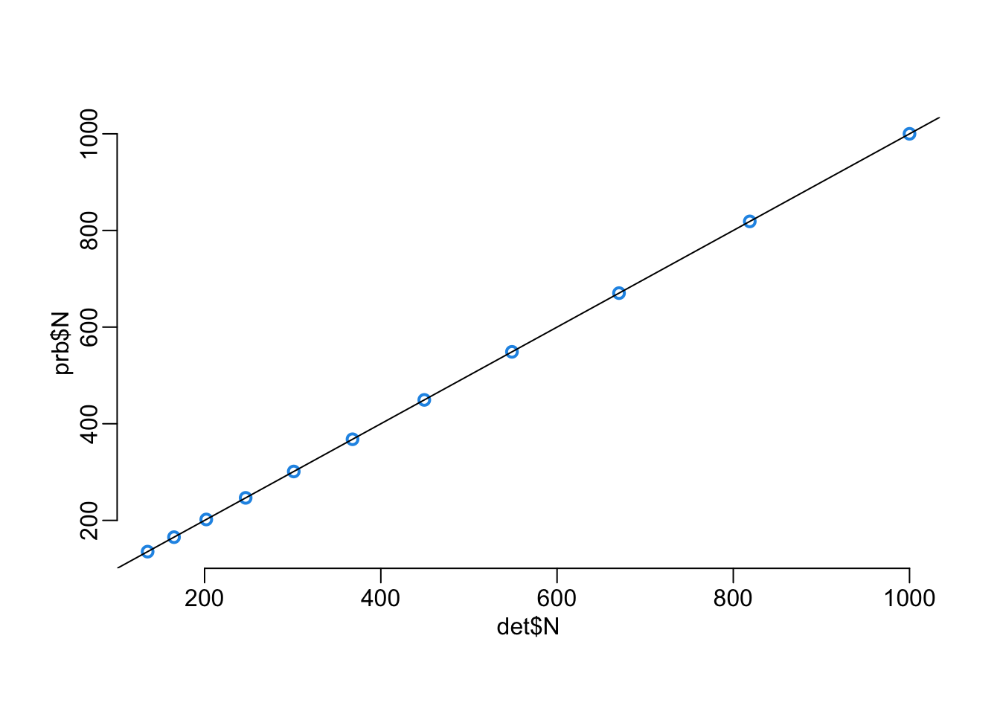
discrete_stochastic <- function(N0, rc, times) {
Delta_t <- mean(diff(times))
p <- 1 - exp(rc * Delta_t)
N <- N0
for (i in times[-1]) {
tailN <- tail(N, 1)
N <- c(N, tailN - rbinom(1, tailN, p))
}
tibble::tibble(time = times, N = N)
}out_d <- replicate2(1000, discrete_stochastic(1000, -.2, seq(0, 10, 1)))plot(NA, xlab = "time", ylab = "N", xlim = c(0, 10), ylim = c(0, 1000))
walk(out_d, ~ with(.x, points(time, N, type = "o", col = adjustcolor(4, .01))))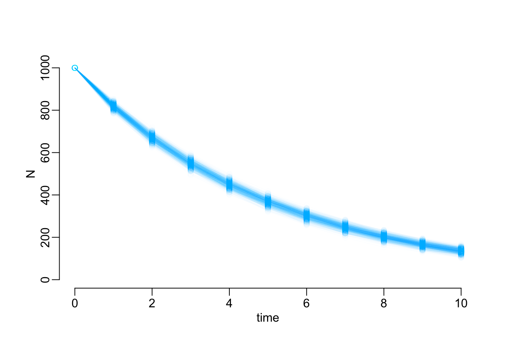
continuous_stochastic <- function(N0, rc, times) {
N <- N0
tf <- max(times)
times <- min(times)
while (tail(times, 1) < tf & N > -1) {
times <- c(times, tail(times, 1) + rexp(1, N * abs(rc)))
N <- N - 1
}
times <- head(times, -1)
tibble::tibble(time = times, N = N0 - seq_along(times))
}out_c <- continuous_stochastic(1000, -.2, 0:10)with(out_c, plot(time, N, type = "s"))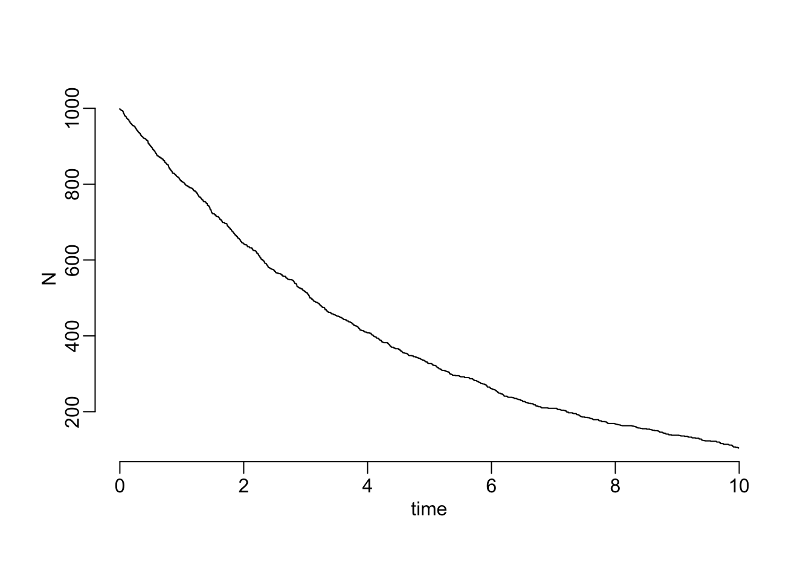
out_c <- replicate2(1000, continuous_stochastic(1000, .2, 0:10))plot(NA, xlab = "time", ylab = "N", xlim = c(0, 10), ylim = c(0, 1000))
walk(out_c, ~ with(.x, points(time, N, type = "s")))
walk(out_d, ~ with(.x, points(time, N, col = 4)))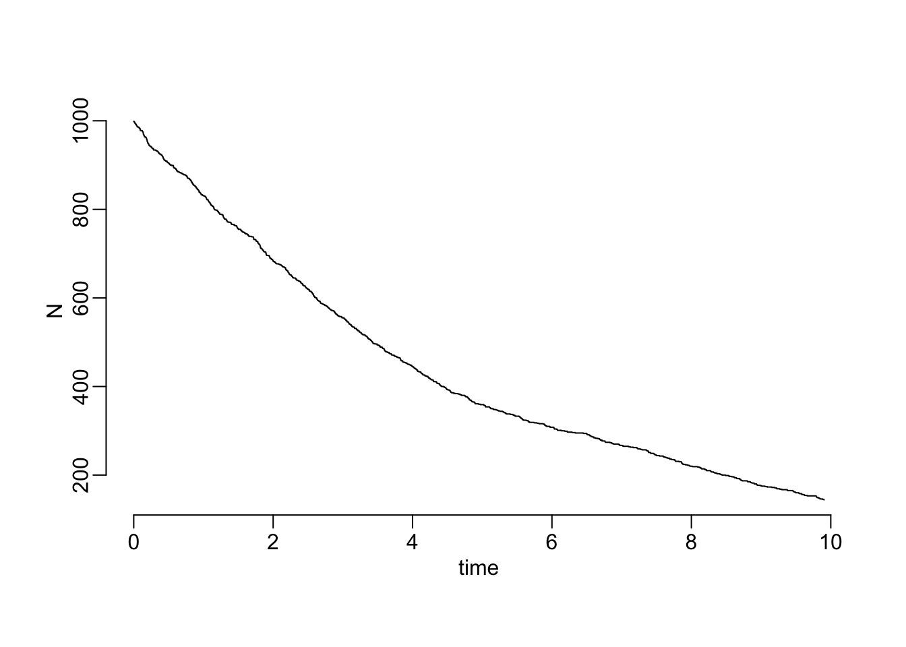
continuous_deterministic(1000, .2, seq(0, 10, .1)) |>
with(plot2(time, N, type = "l"))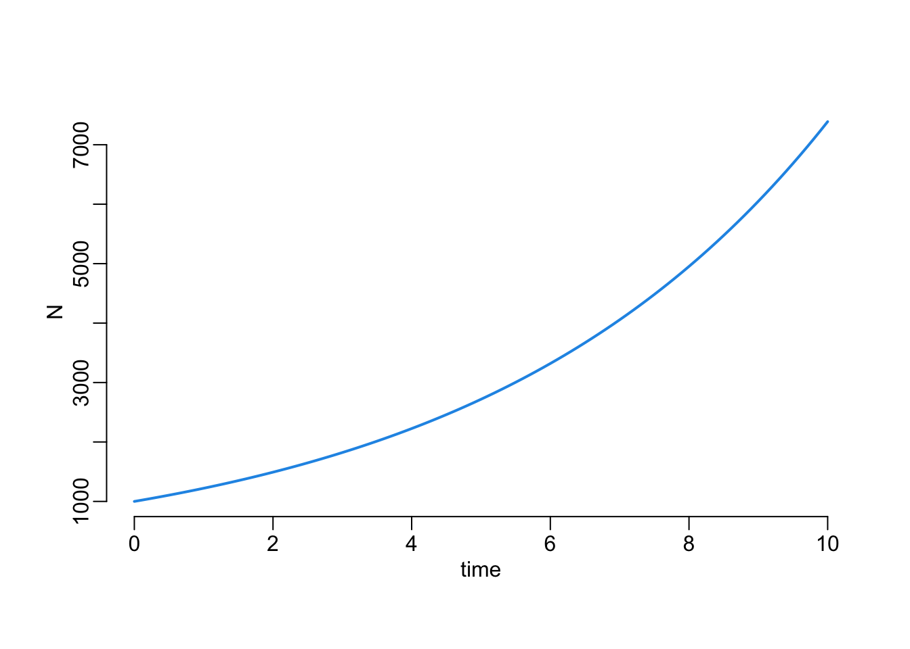
compare_continuous_discrete_deterministic(.1, rc = .2)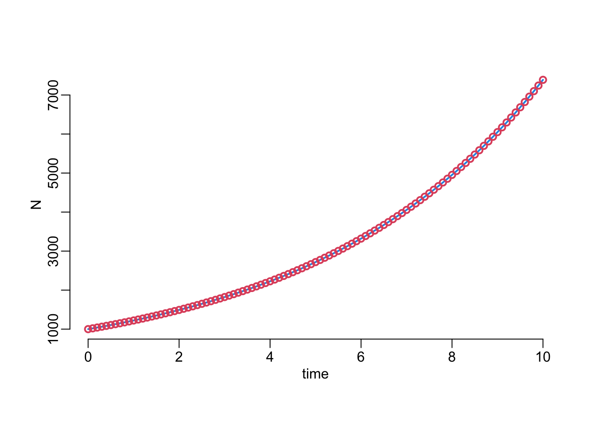
compare_continuous_discrete_deterministic(1, rc = .2)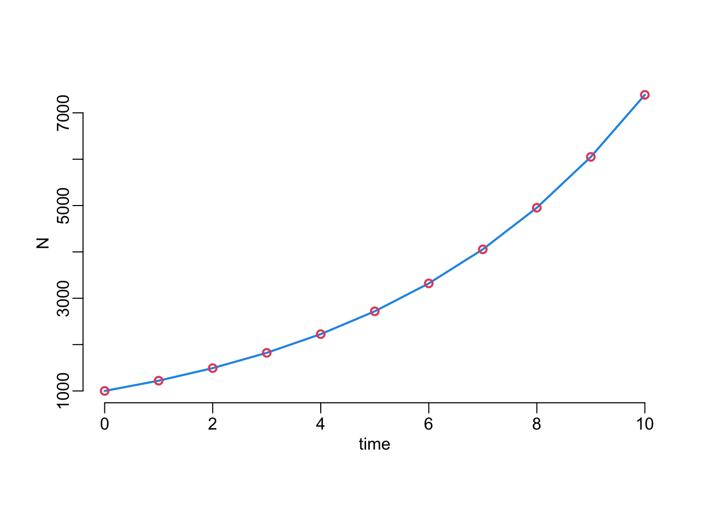
compare_discrete_deterministic_probabilistic(.1, rc = .2)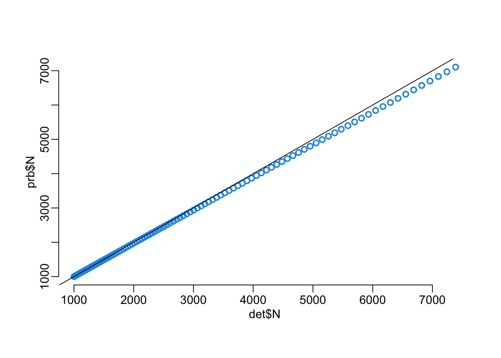
compare_discrete_deterministic_probabilistic(1, rc = .2)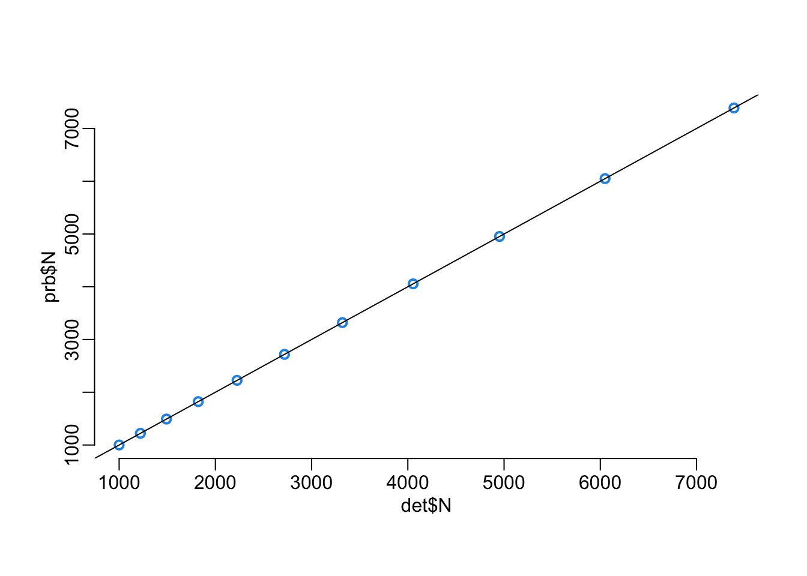
out_d <- replicate2(1000, discrete_stochastic(1000, -.2, seq(0, 10, 1)))
plot(NA, xlab = "time", ylab = "N", xlim = c(0, 10), ylim = c(0, 1000))
walk(out_d, ~ with(.x, points(time, N, type = "o", col = adjustcolor(4, .01))))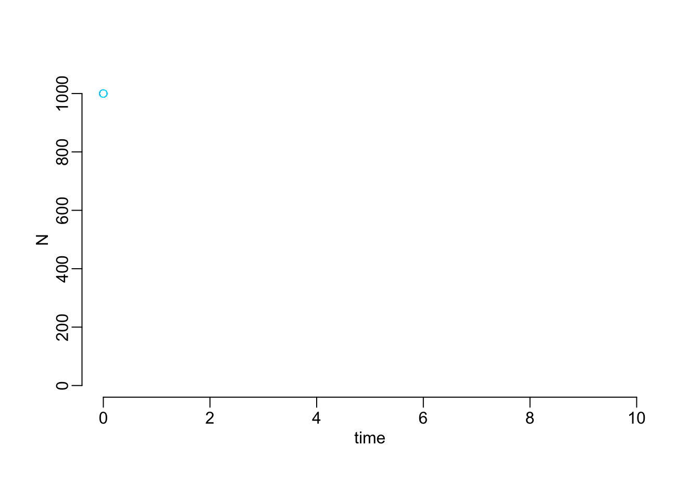